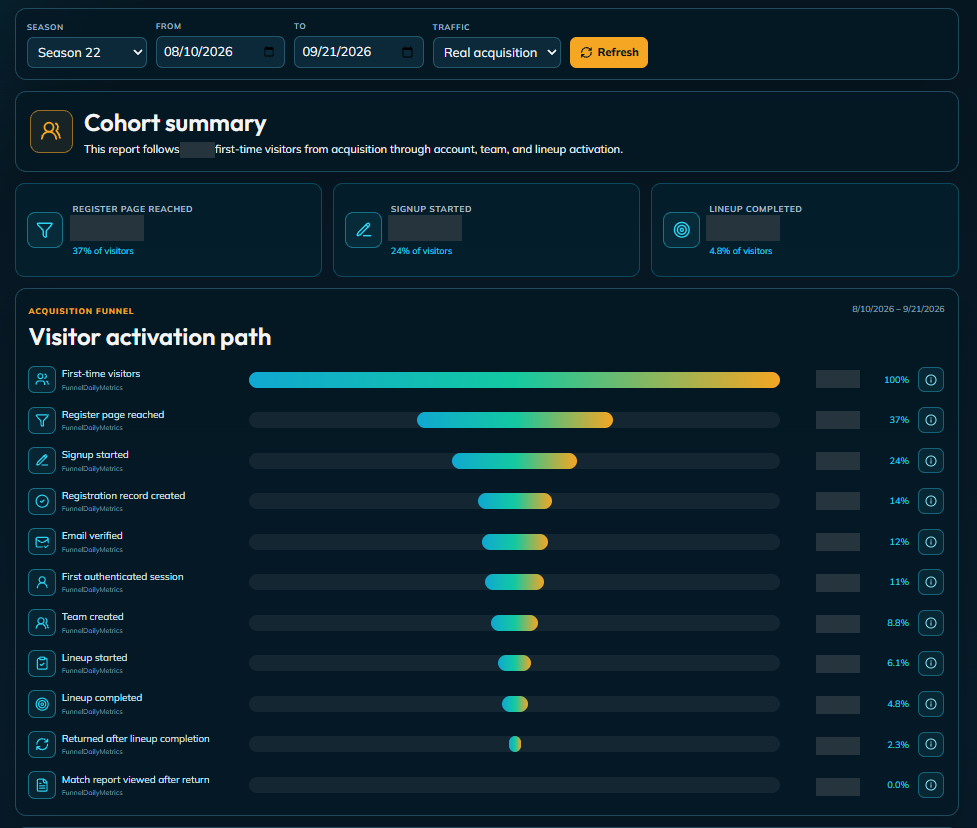
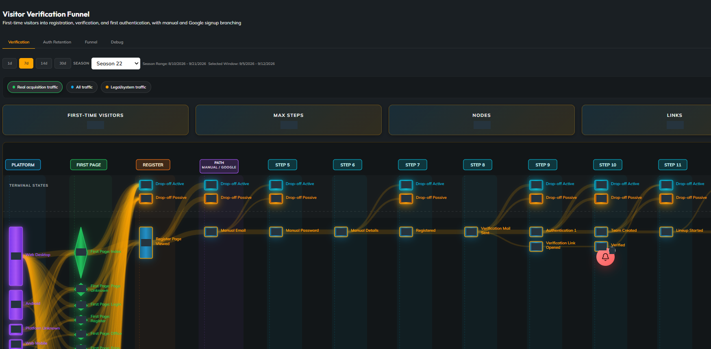
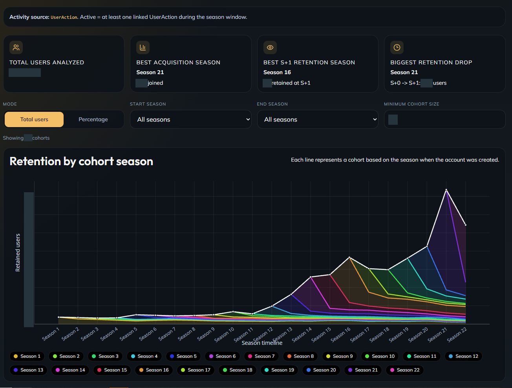
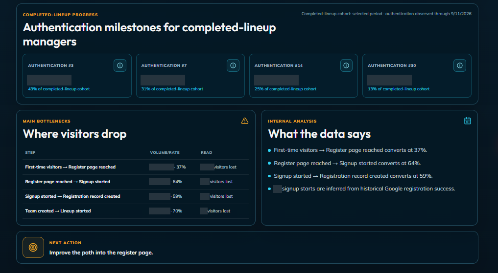

PULSE Product Analytics
From acquisition to retention
I built PULSE's internal analytics dashboards and used them to choose product optimizations and measure improvement. The tools connected acquisition, registration and verification, first lineup activation, repeat visits, and season based retention.
- Product instrumentation
- Funnel analysis
- Cohort analysis
- Retention
- Configurable user flow analysis
- Traffic segmentation
- Product experimentation
- Internal tooling
Summary
The product questions were concrete: where do visitors stop, which users reach meaningful play, and do they return?
I built complementary views of user behavior. Funnels exposed losses between milestones. A configurable flow analysis tool let administrators choose which actions to track and inspect user flows between them. Cohort reports followed activity across seasons, while bottleneck summaries helped turn the analysis into a next action. I used this tooling as input to product changes and to measure their results.
Acquisition and Activation
The activation report followed first time visitors through the registration page, signup, account creation, email verification, and their first authenticated session. It then continued into team creation, lineup completion, and return behavior.
This separated creating an account from reaching a meaningful product milestone. Season, date, and traffic filters provided context for the selected cohort, and the funnel showed both step volumes and conversion rates.

A connected view of acquisition, account setup, and meaningful game activity. Confidential figures are redacted.
Configurable User Flow Analysis
I built a configurable tool that lets an administrator select the actions they want to track, then visualize the observed user flows between those actions. Changing the selected actions lets the administrator investigate different parts of the product journey, including branching paths and drop off states.
The screenshot shows one configuration focused on acquisition and signup: entry platform, first page, manual and Google signup branches, verification, and subsequent product steps. It illustrates the output of the configurable tool, with active and passive drop off states visible along the journey.
The report offered separate views for real acquisition traffic, all traffic, and legal or system traffic. This made the selected population explicit when investigating friction instead of treating every visit as the same kind of acquisition.

The administrator selects the actions to analyze; this view shows the resulting flows for an acquisition and signup configuration. Absolute counts are redacted.
Cohort Retention
The retention dashboard grouped users by the season in which their account was created and followed their activity across subsequent seasons. Its activity definition was explicit: at least one linked user action during the season window.
Controls switched between user counts and percentages, narrowed the season range, and applied a minimum cohort size. This supported comparison of acquisition and retention without confusing a larger incoming cohort with stronger continued engagement.

The cohort structure and relative curve shapes remain visible. Confidential figures and the numerical scale are redacted.
From Analysis to Action
I built a report that combined repeat authentication milestones for users who had completed a lineup, a table of the main funnel bottlenecks, an interpretation of the data, and a proposed next action. The report also surfaced when historical signup activity had been inferred, so that distinction remained visible when interpreting the funnel.

Observed bottlenecks and follow up behavior provide input to the next product change. Confidential figures are redacted.
Product iteration
- Identify friction in the reports
- Choose a product change
- Implement and validate
- Measure the resulting behavior
I used these tools to guide optimization and assess improvement. Meaningful comparisons still require consistent event definitions, traffic selection, and observation windows. A dashboard identifies patterns; it does not by itself establish that a change caused an improvement.
For the implementation and review process around product changes, see AI Assisted Product Engineering. For the underlying product, see PULSE Game Engineering.